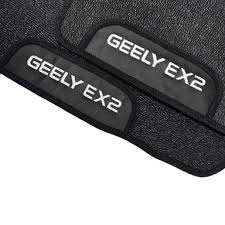

Tapetes de qualidade
Tapetes de Borracha Premium Geely EX2 2025 a 2026
Tapetes de borracha premium com base emborrachada.
Saiba Mais
Fixação original de fábrica. Equipados com ilhoses originais que se encaixam nas travas de fábrica do veículo. Garantem instalação estável, alinhamento perfeito e zero deslizamento durante a condução.
Qualidade e sustentabilidade. Produzidos com materiais reciclados de alta qualidade, entregam durabilidade, conforto e responsabilidade ambiental, unindo estilo e consciência em cada detalhe.